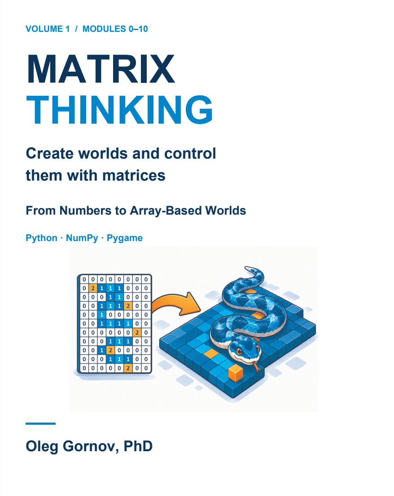
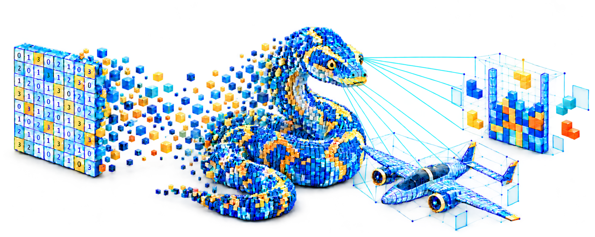
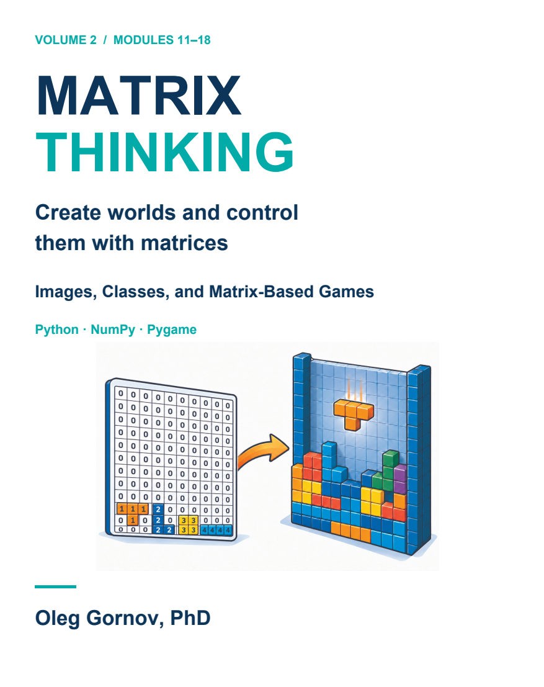
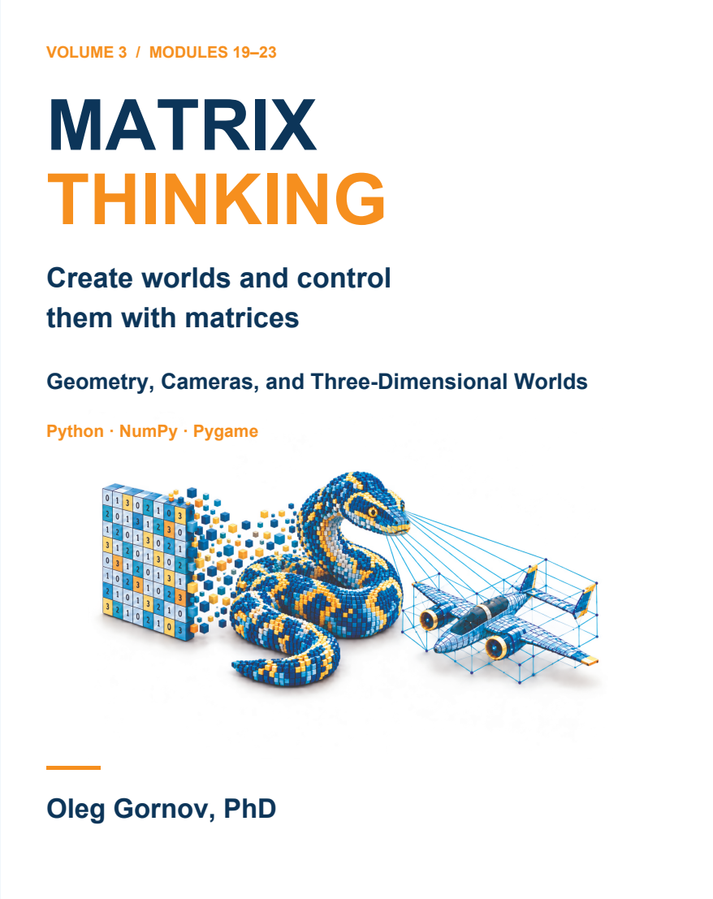

VOLUME 01 · MODULES 0–10
From Numbers to
Array-Based Worlds
Build your foundation in Python and NumPy. Turn arrays into pictures, movement, and your first games.
PYTHON · NUMPY · PYGAME
A matrix can become an image, a playing field, or a world seen through a camera. Learn to build them — and understand what makes them work.

ONE IDEA. MANY WORLDS.
Start with something you can see. Represent it with numbers. Change those numbers, watch what happens, and explain why.
Small, traceable steps connect Python fundamentals to array-based games, classes, transformations, and three-dimensional graphics.
THE FIRST EXPERIMENT
Choose a slice. Predict which pixels will change.
Then apply it and compare.
01 / SELECT YOUR OPERATION
Rows 2–5 and columns 2–5. The stop index is excluded.
Make a prediction, then try it.
Interactive JavaScript model of these NumPy operations. Python is not executed here.
Each cell is one pixel. Click a cell to cycle its value.
03 / THE IMAGE
The first index selects rows; the second selects columns. In 2:6, index 2 is included and index 6 is excluded. Four rows × four columns gives 16 selected cells.
GAME LABORATORIES
01 / COORDINATES & MOVEMENT
One field, two synchronized views. Follow the head, release the tail, and watch the matrix change.
Explore the snake lab →02 / ROTATION & COLLISION
Move and rotate a piece matrix. Combine it with the field, then discover how a full row disappears.
Explore the falling-block lab →03 / TRANSFORMS & PERSPECTIVE
Pilot the book’s wireframe aircraft. Fight new enemy sectors and inspect the matrices behind every move.
Explore the wireframe arena →04 / RAYS & DEPTH
Walk through the book’s maze. Connect the matrix and ray hits to a first-person view.
Explore the raycasting lab →05 / REGION GROWTH & AREA
Close a line. Watch a region spread one wave at a time, count its cells, and compare capture candidates.
Explore the region-growth lab →06 / FEATURES & BOOLEAN MASKS
Find a hidden character. Ask about visible traits and watch Boolean masks filter the feature matrix.
Explore the face detective lab →THE LEARNING PATH
Or explore the complete book in a single EPUB.
Publication is in preparation.

VOLUME 01 · MODULES 0–10
Build your foundation in Python and NumPy. Turn arrays into pictures, movement, and your first games.

VOLUME 02 · MODULES 11–18
Organize growing programs with classes. Work with images and build games including Tetris and Xonix.

VOLUME 03 · MODULES 19–23
Connect trigonometry and transformations to wireframe flight, raycasting, and perspective projection.
KEEP EXPLORING
Find the companion code, follow the project steps, and make your own changes.
FOR READERS